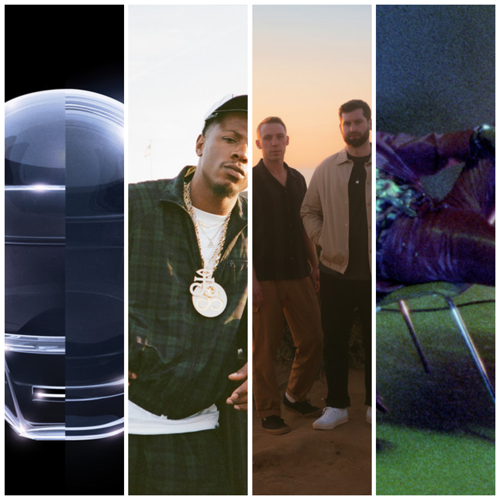

In Focus: Artists

In Focus: Artists
These are 4 artists who I believe deserve way more appreciation than what they are currently receiving. These three artists can show good production, lyricism, vocal performance, distinction, innovation, consistency, and creativity. Some of these artists may already be known by lots of people, but still receive less appreciation than they deserve.


21.5 million monthly listeners is no small feat, but strangely, I still don’t hear enough people giving Labrinth the recognition he truly deserves. The man is a musical powerhouse. He doesn’t just sing, he soars. He doesn’t just produce, he builds sonic worlds. Whether he’s composing full scores, crafting emotional ballads, or collaborating with global superstars, Labrinth proves time and time again that he can do it all.
Just take a listen to “Fragile”, his voice glides over Kygo’s production like silk, almost otherworldly. Then there’s “Still Don’t Know My Name,” arguably one of the most unforgettable songs of the 2010s. It’s one of those rare tracks that can only be fully understood by experiencing it firsthand.
Even his features feel like centerpieces. His work with Sia and Diplo on their collab project LSD gave us tracks like “Thunderclouds,” “Genius,” and “Heaven Can Wait,” each track radiating with personality and artistry as he collaborates back to back with Sia. “Majesty” with Nicki Minaj & Eminem has Labrinth’s haunting vocals and lyrical bridges elevating the entire track to a new level by having subtle appearances in between verses.
If you’re into a soulful blend of electronic and R&B, Labrinth’s catalog is a treasure trove just waiting to be explored. Seriously, spin one or two of the songs I mentioned and you’ll see what I mean. Thank me later.
This artist reminds me of J. Cole. Joey Bada$$ writes many introspective and brooding lyrics about himself, his past, and society. His kind of production is more in the boom-bap subgenre, but can still come across as mainstream. Rising to fame with his debut mixtape 1999, Joey quickly established himself as a skilled lyricist with a mature outlook far beyond his years.
His track “Righteous Minds” stands out as perhaps his best song, filled with introspection, sharp social commentary, and a hypnotic beat that captures the essence of true hip-hop. As his career progressed, Joey continued to evolve without sacrificing the depth that drew fans to him.
Songs like “Paper Trail$” reflect his critical perspective on money and the corrupting power of fame, all while delivering head-nodding production and flawless flow. “Temptation,” from his politically charged album All-Amerikkkan Bada$$, reveals his ability to balance personal pain and systemic injustice with uplifting hooks and accessible beats.
On the more emotional end, his most streamed song “Love Is Only A Feeling” showcases his versatility, with smooth delivery and heartfelt lyricism that resonates with a wider audience.
Beyond his solo work, Joey also proves his prowess on features. Most notably on A$AP Rocky’s “1Train,” where he holds his own alongside rap heavyweights like Kendrick Lamar and Danny Brown.
For anyone craving authentic, meaningful hip-hop that bridges classic style with modern relevance and insightful lyricism, Joey Bada$$ is essential. Start with “Righteous Minds,” then dive into “Paper Trail$,” “Temptation,” and “Love Is Only A Feeling”. You won’t be disappointed.
ODESZA is a genre-defying electronic music duo known for crafting immersive, emotionally rich soundscapes that transcend typical EDM boundaries. Their music blends atmospheric textures, organic instrumentation, and pulsing beats, creating a listening experience that feels both euphoric, echoing, and introspective.
“Late Night” stands out as their best track in my opinion. It’s a perfect balance of driving rhythm and emotional build-up, it's a sonic journey that demands to be felt as much as heard. For those new to their work, “Sun Models” is a great starting point; widely appreciated for its uplifting tone and smooth vocal sampling, it captures ODESZA’s knack for blending electronic production with human warmth.
One of their most powerful collaborations is “The Last Goodbye,” featuring soul singer Bettye LaVette. The track’s haunting vocal performance, paired with cinematic production, showcases ODESZA’s ability to elevate vocals into something larger than life, making it arguably their most emotionally impactful piece.
Meanwhile, “A Moment Apart” exemplifies their production mastery: layered, expansive, and deeply moving, it represents the peak of their technical and creative abilities.
Whether you’re into electronic music or not, ODESZA offers something universally appealing: songs that evoke emotion, memories, and a sense of wonder. Their sound is tailor-made for both solo reflection and festival-sized celebration. Start with “Late Night,” then explore “Sun Models,” “The Last Goodbye,” and “A Moment Apart”—and you’ll quickly understand why ODESZA continues to resonate so deeply with fans around the world. If you like widely known producers like MIKE DEAN or Mark Ronson, ODESZA could be a possible next listen.
Daft Punk is one of the most influential acts in electronic music history, known for pioneering a sound that blends house, funk, disco, and rock into something entirely their own. Their music isn’t just for dancing, it’s for feeling, thinking, and getting lost in.
A perfect example is “Giorgio by Moroder,” their best song in my opinion that deserves more appreciation. This 9-minute masterpiece features a spoken-word intro by legendary producer Giorgio Moroder, building into an explosive journey of layered synths, live instrumentation, and intricate production that showcases Daft Punk’s genius.
For those looking for a more accessible entry point, “Get Lucky” is their most universally appreciated hit at over 1.2 billion Spotify streams. A timeless funk-disco anthem featuring Pharrell Williams that defined a generation of pop and dance music. When it comes to vocal collaborations, Daft Punk shines with “One More Time,” a euphoric classic powered by Romanthony’s infectious vocals, and “Instant Crush,” a melancholic yet catchy gem with Julian Casablancas of The Strokes delivering one of the duo’s most emotionally resonant performances.
For pure instrumental beauty, “Veridis Quo” stands out. It’s a contemplative, synth-driven piece that evokes wonder without a single word. Whether you're a longtime music lover or new to electronic sounds, Daft Punk offers an unforgettable experience.
Their ability to create music that feels futuristic and nostalgic at the same time is unmatched. Start with “Giorgio by Moroder,” as the intro to their discography and let the rest of their catalog pull you in, especially their classics.